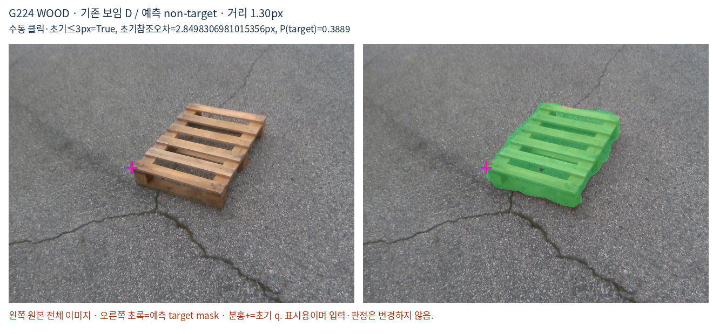
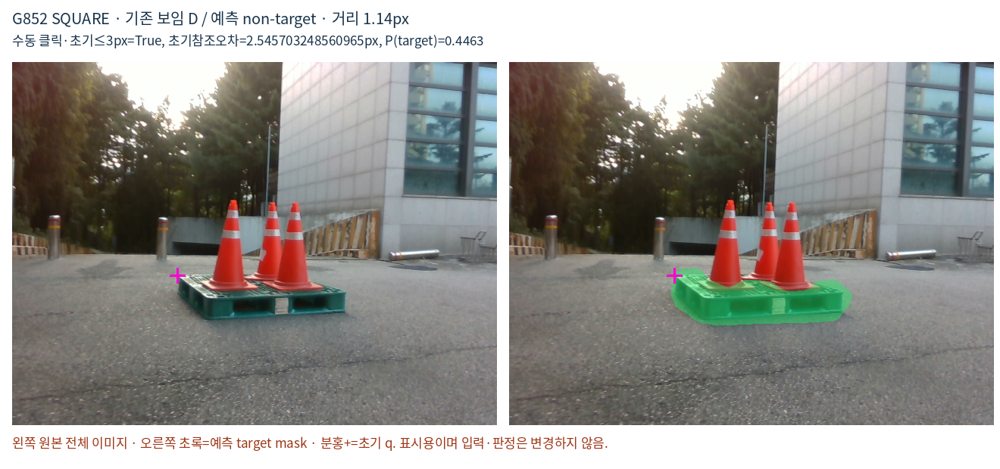
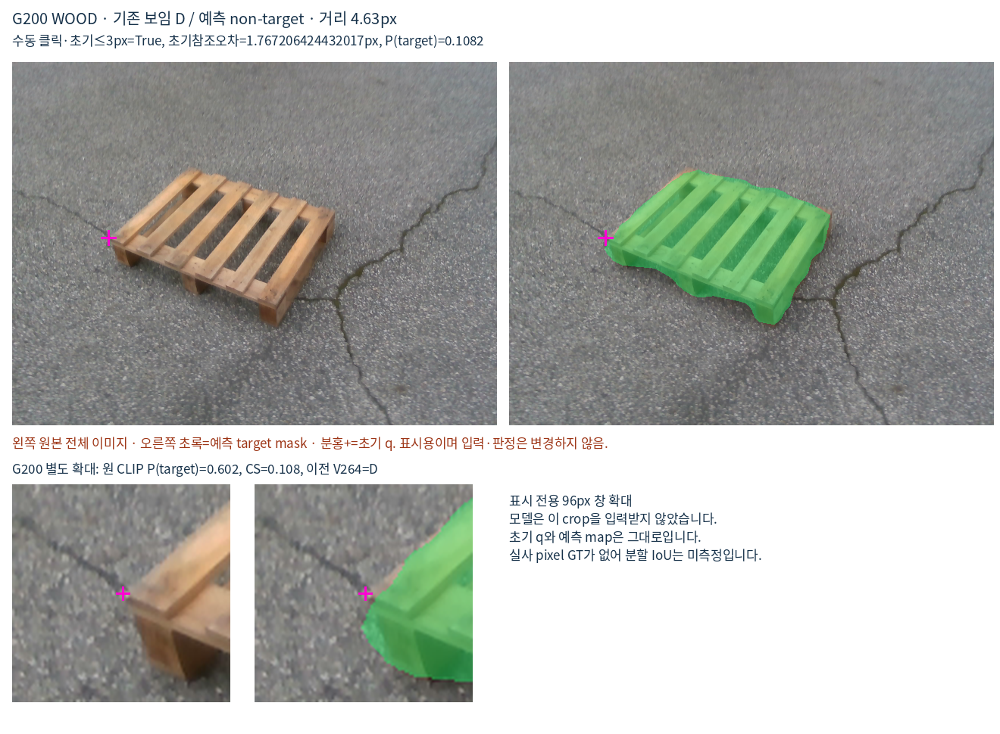
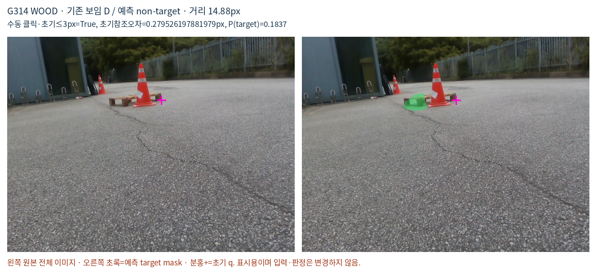
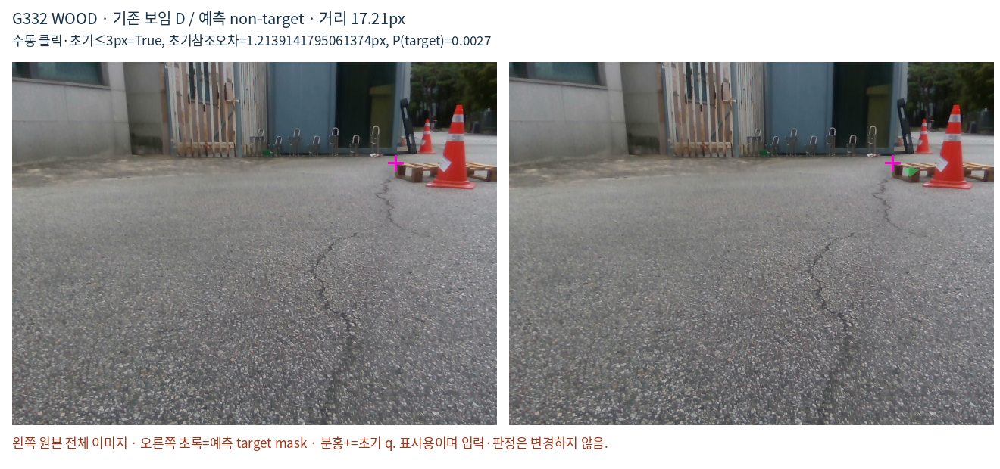
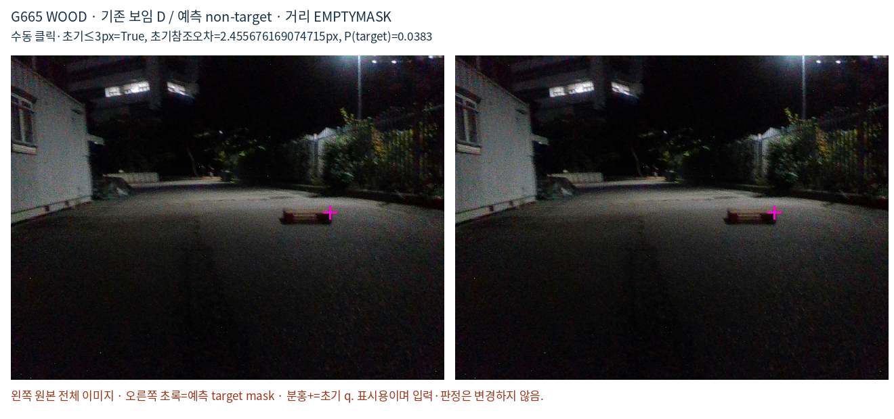

원본 예측과 0.5 문턱을 유지한 저장 출력 진단입니다. 실제 픽셀 분할 정답이 없어 경계 오류의 원인을 확정하지 않습니다. 가까운 점을 새로 보임으로 바꾸거나 좌표를 이동하지 않았습니다.
| 유형/부분집합 | 보임 전체 | 누락 | LE3 | GT3_LE6 | GT6_LE16 | GT16 | EMPTYMASK |
|---|---|---|---|---|---|---|---|
| ALL/ALL_PRIMARY_D | 1147 | 552 | 150 | 133 | 191 | 71 | 7 |
| ALL/MANUAL_D_INITIAL_LE3 | 376 | 182 | 47 | 52 | 57 | 24 | 2 |
| ALL/OTHER_PRIMARY_D | 771 | 370 | 103 | 81 | 134 | 47 | 5 |
| WOOD/ALL_PRIMARY_D | 616 | 309 | 95 | 79 | 102 | 26 | 7 |
| WOOD/MANUAL_D_INITIAL_LE3 | 153 | 90 | 23 | 28 | 29 | 8 | 2 |
| WOOD/OTHER_PRIMARY_D | 463 | 219 | 72 | 51 | 73 | 18 | 5 |
| SQUARE/ALL_PRIMARY_D | 531 | 243 | 55 | 54 | 89 | 45 | 0 |
| SQUARE/MANUAL_D_INITIAL_LE3 | 223 | 92 | 24 | 24 | 28 | 16 | 0 |
| SQUARE/OTHER_PRIMARY_D | 308 | 151 | 31 | 30 | 61 | 29 | 0 |
거리 단위는 원영상 px입니다. LE3=3이하, GT3_LE6=3초과6이하, GT6_LE16=6초과16이하, GT16=16초과, EMPTYMASK=프레임 전체에 예측 target 없음.





